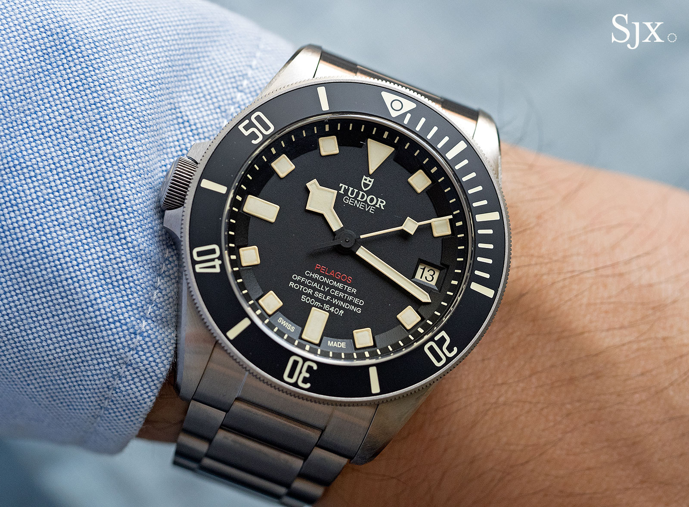
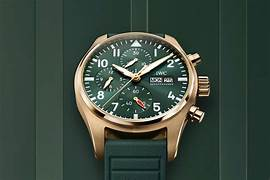

Many everyday objects are designed for right-handers — including watches. But left-handers can wear special models. We’re telling you which models are suitable for left-handers and why they’re unique.
Do you wear a wristwatch on the left or right?
Most people wear their watch on the left wrist, since they use their right hand for writing or handling objects. For left-handers, however, the reverse often makes more sense. A left-handed watch has its crown on the opposite side, making it easier to operate.
Why not just wear it on the right?
Left-handers who wear right-handed watches might find that the crown digs into their wrist or becomes hard to reach. A watch designed for left-handers solves that issue entirely.

What makes a watch the right choice for left-handers?
Besides the reversed crown position, some watches feature mirrored dial designs or even reverse movement configurations. The best left-handed watches combine practicality with aesthetic appeal, ensuring the same high-end craftsmanship as traditional models.
The History of Left-Handed Watches
Few know that left-handed watches date back to the mid-20th century, when tool watches for divers and pilots were modified to suit southpaws. Brands like Tudor and Panerai were among the first to experiment with reversed crowns.
What does “Destro” mean?
“Destro,” meaning “right” in Italian, is the nickname often given to left-handed watches. These “Destro” models were initially made for left-handed divers and soldiers. Today, they are a statement of individuality and style.
Top Models for Left-Handers
Brands such as Tudor, IWC, and Rolex offer stunning left-handed versions of their most famous watches. From the Tudor Pelagos LHD to Rolex’s rare left-crown prototypes, these timepieces have become collector favorites.
 How much does a wristwatch for left-handers cost?
Like any other timepiece, the price depends on the brand, materials, and complexity of the watch. Entry-level models start under $1,000, while luxury editions from Rolex or IWC can exceed $10,000.
Final Thoughts
Left-handed watches are a testament to inclusivity in design. They blend ergonomic function with mechanical excellence, showing that even the smallest detail — like crown placement — can make a world of difference.